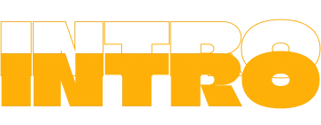

01
VARIGHED: 1 UGE
(26/08/24 - 30/08/24)
LÆRINGSMÅL
- Købe og hoste domæner
- Adobe Creative Cloud
- Storyboarding til videoer
- Basic Figma
- FileZilla
- At arbejde sammen i grupper med formålet at lære hinanden at kende
- Simpel videoredigering
- Lyd-optagelse og -mixing (acapella)
- Læse bogen “Interfacedesign” af M. Rold, 2024
For den første uge af studiet fik vi en ugelang gruppeoplevelse med målet at lære hinanden at kende. Vi skulle lave en video, der fulgte stiliseringen af en titelsekvens. Vores valg faldt på showet "The Office", og vi brugte etableringsbilleder og filmstil herfra til at skabe vores video.
Jeg var personligt ansvarlig for at lave baggrundsmusikken. For at gøre det hele lidt mere "fjollet" lavede jeg den a cappella ved at synge de forskellige instrumenter fra "The Office"s introtema og lægge dem oven på hinanden i det gratis program Audacity.
Vi optog primært videoen i MLS, MCU og MS afstande, med både fugleperspektiv og frøperspektiv afhængigt af optagelsen.